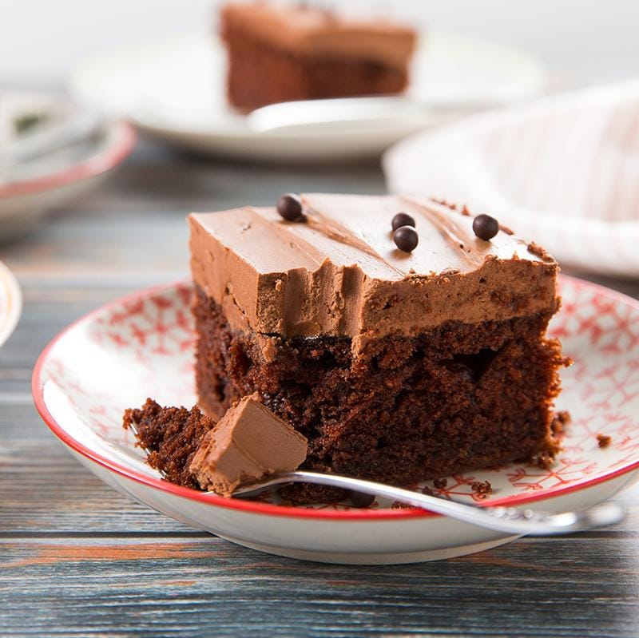

Chocolate Cake
⭐⭐⭐⭐⭐ 4.9 Rating | ⏱ 55 Minutes | 🍽 8 Servings
Category
Dessert
Difficulty
Medium
Calories
320 kcal
Cooking Style
Baked
📋 Ingredients
- 2 cups All-purpose Flour
- 2 cups Sugar
- ¾ cup Cocoa Powder
- 2 Eggs
- 1 cup Milk
- ½ cup Vegetable Oil
- 1 tsp Baking Powder
- ½ tsp Baking Soda
- 1 tsp Vanilla Essence
- ¼ tsp Salt
- Chocolate Frosting
🍳 Required Utensils
- Mixing Bowl
- Measuring Cups
- Whisk or Electric Mixer
- Cake Baking Tin
- Oven
- Cooling Rack
- Knife
- Cake Stand
📖 Introduction
Chocolate Cake is one of the world's most loved desserts. It has a soft sponge, rich chocolate flavour, and creamy frosting. It is perfect for birthdays, celebrations, festivals, and family gatherings.
🔬 Principle
Baking powder and baking soda produce carbon dioxide gas when heated. These gases make the cake rise, creating a soft and fluffy texture while the cocoa powder provides a rich chocolate flavour.
👨🍳 Procedure
- Preheat the oven to 180°C.
- Grease the cake tin with butter and dust it with flour.
- Mix flour, cocoa powder, baking powder, baking soda, and salt.
- Beat eggs and sugar until light and fluffy.
- Add milk, oil, and vanilla essence.
- Slowly mix the dry ingredients into the wet mixture.
- Whisk until a smooth batter is formed.
- Pour the batter into the prepared cake tin.
- Bake for 35–40 minutes.
- Insert a toothpick to check if the cake is fully baked.
- Cool the cake completely.
- Spread chocolate frosting evenly.
- Decorate with chocolate chips or cherries.
- Slice and serve.
⚠ Precautions
- Do not overmix the batter.
- Always preheat the oven.
- Use fresh baking powder.
- Allow the cake to cool before frosting.
- Avoid opening the oven frequently while baking.
💡 Chef Tips
- Add chocolate chips for extra richness.
- Use dark chocolate for stronger flavour.
- Decorate with strawberries or cherries.
- Serve with vanilla ice cream.
- Store in an airtight container.
🥗 Nutrition Facts
| Nutrient | Amount |
|---|---|
| Calories | 320 kcal |
| Protein | 5 g |
| Carbohydrates | 42 g |
| Fat | 15 g |
| Sugar | 28 g |
🍽 Serving Suggestions
- Serve warm with vanilla ice cream.
- Enjoy with coffee or tea.
- Decorate with whipped cream.
- Add chocolate syrup on top.
- Serve during birthdays and celebrations.
🌿 Health Benefits
- Cocoa contains antioxidants.
- Milk provides calcium.
- Eggs are a good source of protein.
- Provides quick energy.
- Best enjoyed occasionally as part of a balanced diet.
✅ Result
The prepared Chocolate Cake should be soft, moist, fluffy, rich in chocolate flavour, and beautifully decorated with smooth frosting. It should have a tender sponge and delicious taste that everyone enjoys.
🎥 Watch Recipe Video
Learn the complete recipe by watching the step-by-step video.
▶ Watch on YouTube